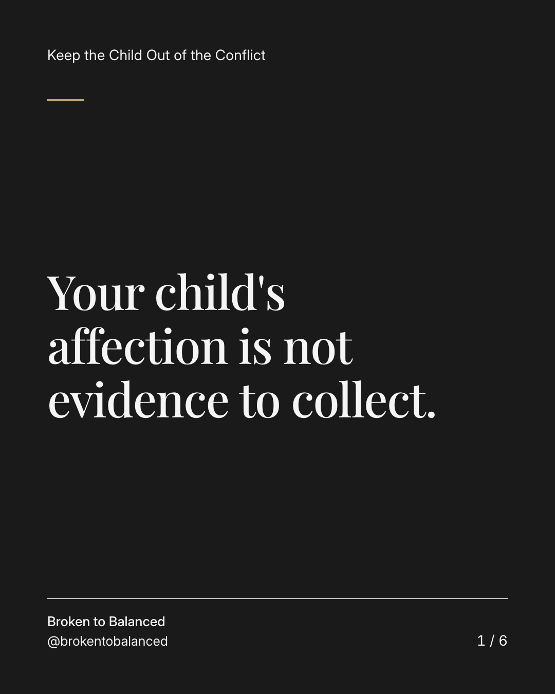
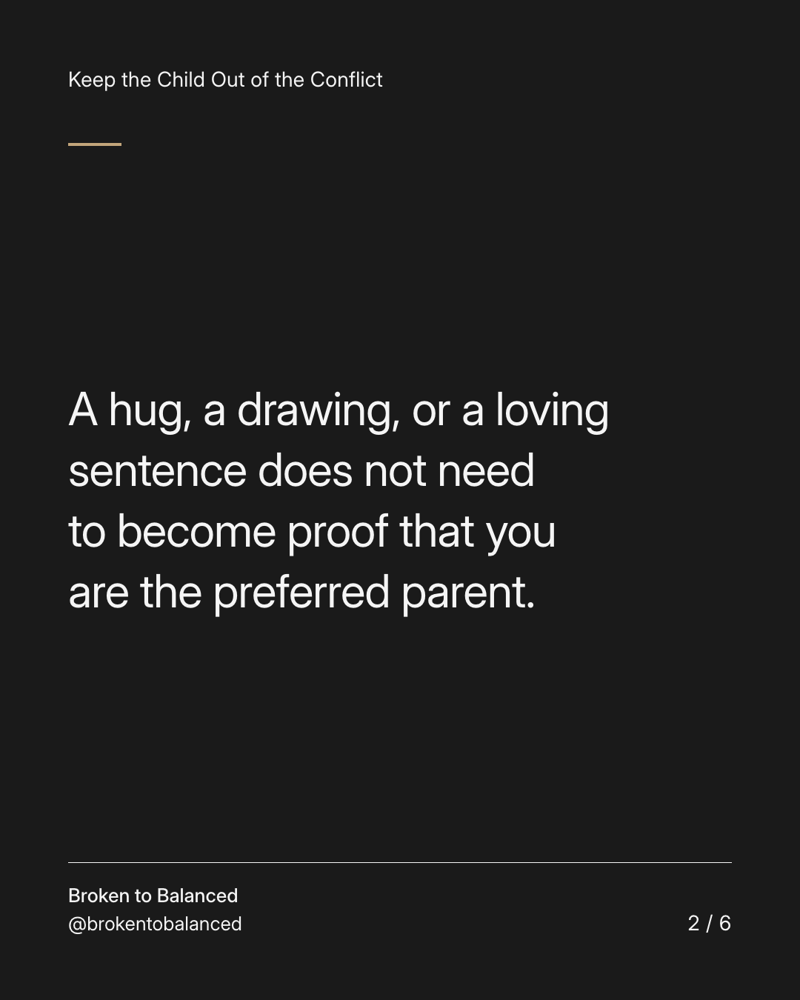
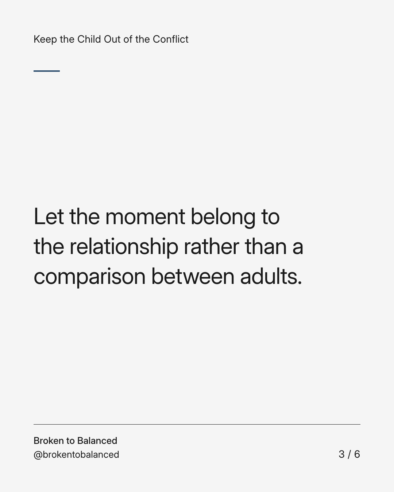
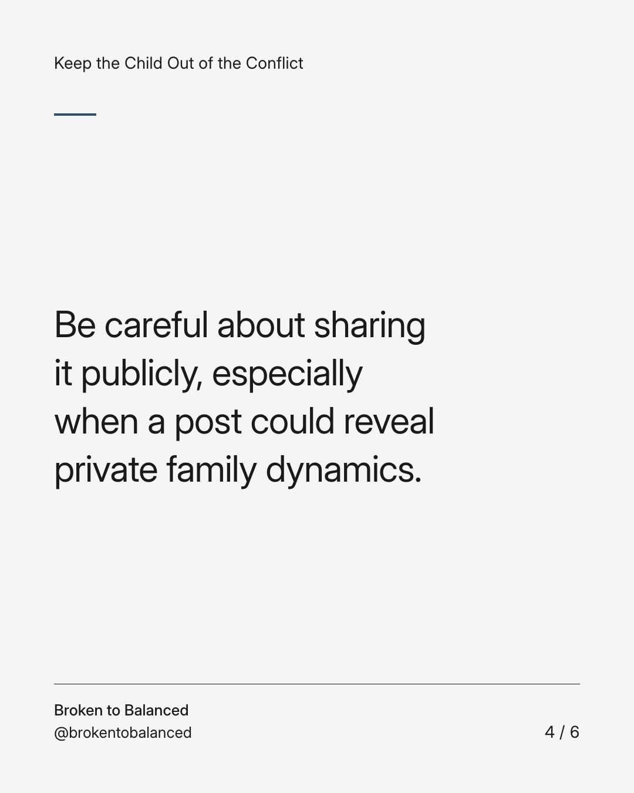
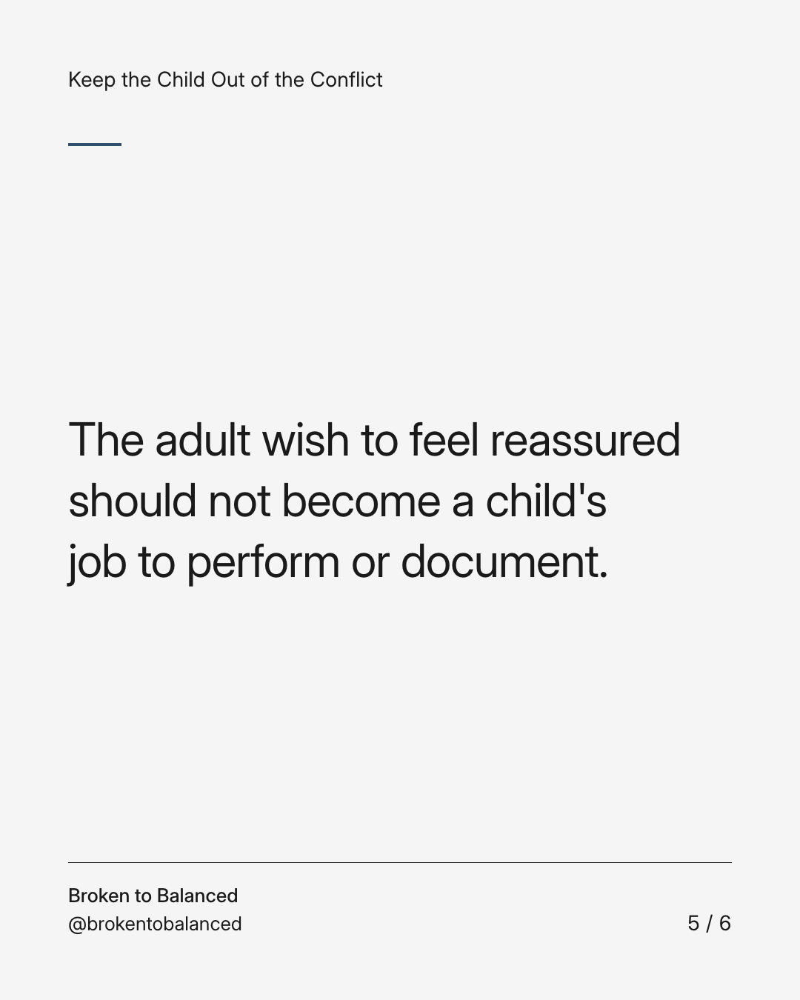
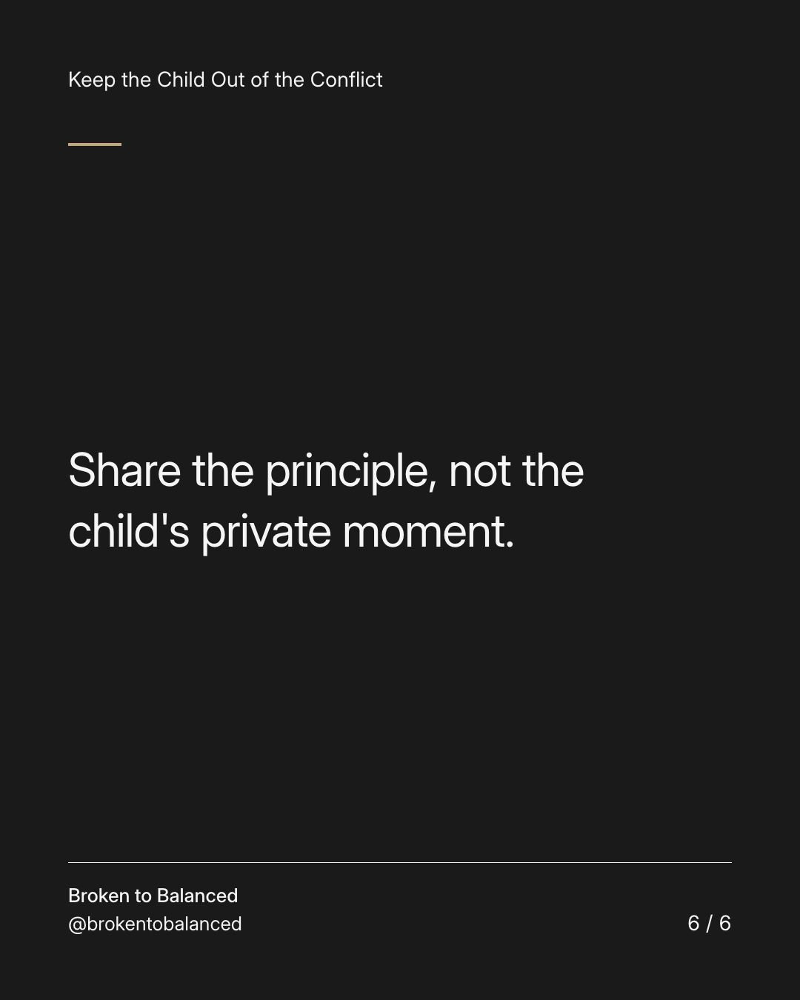

Exact text and accessibility text
Your child's affection is not evidence to collect.
Slide 1 of 6. Your child's affection is not evidence to collect.


Exact text and accessibility text
A hug, a drawing, or a loving sentence does not need to become proof that you are the preferred parent.
Slide 2 of 6. A hug, a drawing, or a loving sentence does not need to become proof that you are the preferred parent.


Exact text and accessibility text
Let the moment belong to the relationship rather than a comparison between adults.
Slide 3 of 6. Let the moment belong to the relationship rather than a comparison between adults.


Exact text and accessibility text
Be careful about sharing it publicly, especially when a post could reveal private family dynamics.
Slide 4 of 6. Be careful about sharing it publicly, especially when a post could reveal private family dynamics.


Exact text and accessibility text
The adult wish to feel reassured should not become a child's job to perform or document.
Slide 5 of 6. The adult wish to feel reassured should not become a child's job to perform or document.


Exact text and accessibility text
Share the principle, not the child's private moment.
Slide 6 of 6. Share the principle, not the child's private moment.
Exact caption
Plain-text fallback: select and copy the caption.